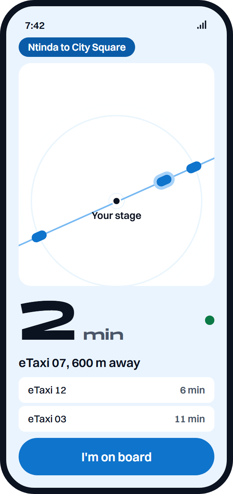
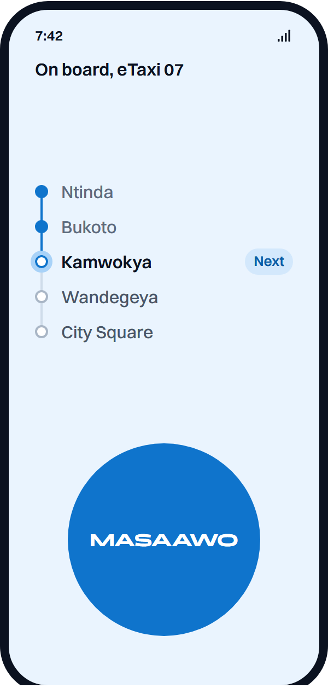
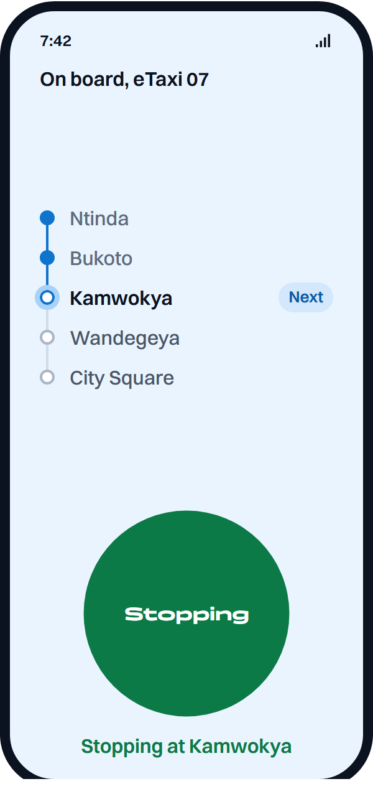
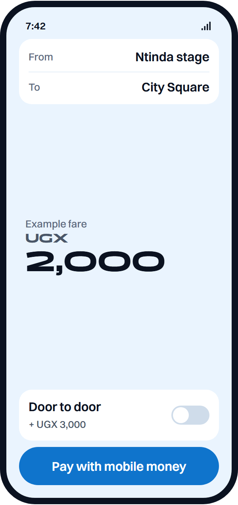
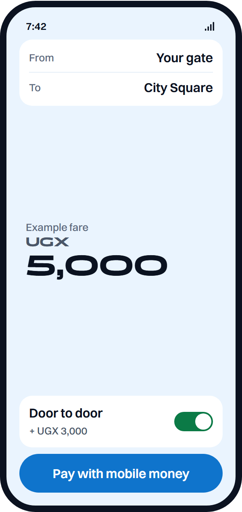

Business and IT proposal
A concept proposal for privately operated, publicly regulated electric 14-seater taxis, with a rider app and a fleet data platform.
This document sets out the business case, operating model, technology architecture, data strategy, financial logic and delivery plan for eTaxi: a network of electric 14-seater public taxis for Kampala, privately financed and operated under public regulation. Its purpose is to let public bodies, taxi operators, financiers and technology partners decide whether to take the concept to a funded pilot.
| Version | Date | Status | Change |
|---|---|---|---|
| 1.0 | 19 October 2026 | Concept for discussion | First issue |
eTaxi is a concept. No vehicle is operating, no company is registered and no funding has been raised. Every figure for cost, saving, emissions and fleet size is indicative: it comes from a transparent model of energy costs only, described in Appendix A, and not from a full business plan or a quotation.
This document is not an offer of securities and is not a commitment by any named institution. Ministries, agencies, operators, associations, companies and funds named in it are cited as sources of public information. None has endorsed, reviewed or agreed to this proposal.
Each factual claim about the world carries a numbered reference, listed in Appendix D with its web address. Where the evidence was weak, conflicting or missing, the text says so. The tag Indicative marks model outputs. The tag Proposed marks targets, plans and design choices that are this proposal's own and have not been agreed with anyone. Statements of opinion are introduced as the proposal's view.
eTaxi is a concept for electric 14-seater public taxis in Kampala, privately financed and operated under public regulation, with a rider app and a fleet data platform. It is a concept only: nothing is operating, no company is registered and no funding has been raised.
The problem. On 24 August 2026 the Ministry of Works and Transport and the Uganda Police Traffic Directorate began a 100-day crackdown on commuter taxis in dangerous mechanical condition across Greater Kampala.[1] The test is vehicle condition, not age. It still removes supply that commuters depend on, and operators say they cannot afford replacements.[2] No scrappage or fleet-renewal loan scheme was found in the research behind this proposal.
The proposal. A licensed operating company, in which existing taxi owners and associations can hold shares or lease vehicles, would run electric 14-seaters on fixed routes from existing stages, with the fare shown before boarding, payment by mobile money and a stop-request button called Masaawo. A data platform would give riders arrival times and give regulators and planners trip and condition data they do not have today. The state-backed electric buses serve trunk corridors; eTaxis would serve feeder and cross-town routes and give condemned 14-seaters a renewal path.
The numbers. This is an energy cost comparison, not a business plan. In the base case a petrol 14-seater spends UGX 106,900 a day on fuel and an electric one UGX 24,553 on electricity. The saving is worth about UGX 103.9 million over eight years at the average shilling lending rate, and about UGX 152.9 million at the foreign-currency rate. The price of an electric 14-seater in Uganda is not known; the pilot would establish it.
The plan. A pilot of 30 vehicles in months 0 to 12, a corridor rollout of 300 in years 2 to 3 and network scale of 2,000 in years 4 to 6, with a gate between phases. At 2,000 vehicles the model gives about 25,000 tonnes of CO2 avoided a year.
Government: a pilot licence and stage access. Operators: co-design and first shareholding. Financiers: pilot and feasibility funding. Technology and research partners: platform, data and evaluation support. Section 16 sets out the asks and a 90-day plan.
Kampala moves mainly on privately owned 14-seater taxis that were never given routes, timetables or fares. Three attempts to replace them with buses have failed or stalled, and a fourth, state-backed, began in May 2026.
In 1972 a private bus company was nationalised to form the Uganda Transport Company, serving mainly Kampala and western Uganda; the report is seen only in summary.[3] That company and the People's Transport Company collapsed in the early 1990s after vandalised and cannibalised parts and fare fraud, which opened the market to private minibus operators.[4] Since then 14-seaters have been licensed with no fixed routes, timetables, fares or formal stops.[5]
The sector is already private. Drivers hire the minibus from an owner for a daily charge and pay fuel and terminal fees.[6] For nearly 30 years the taxi association UTODA managed taxis and parks under a KCCA contract; the start (about 1986) and end (about 2012) dates could not be confirmed.[7] Reports conflict on how it ended: one says KCCA cancelled the contract in 2011,[8] another that a KCCA email extended its management to 31 October 2014.[9] KCCA then took over the parks and set a monthly fee of UGX 155,000 per taxi in place of daily dues; UTODA had collected over UGX 1 billion a month from about 7,000 taxis.[10]
Pioneer Easy Bus began in 2012 under a special regulation, with fares fixed at UGX 500 in the city centre and UGX 1,000 outside. It planned 500 buses, about 100 arrived at first, the bus lanes and terminals the state was to build never appeared, and the service failed within about a year.[11] Tondeka Metro, announced on 12 December 2019 with 980 buses, did not materialise because ownership, financing, operation and regulation were unclear.[12]
E-Bus Xpress, run by Kiira Motors Corporation through a subsidiary, began scheduled cashless electric bus service in Kampala in May 2026 on City Square to Ntinda; the launch date of 4 May comes from a search summary.[13] Fares run from UGX 800 to UGX 1,800 and the government plans 100 electric buses in the Greater Kampala Metropolitan Area (GKMA) by December 2026 and at least 300 by December 2027.[14] The fleet size is reported inconsistently as 21, 23 or 30 buses, and passenger capacity as 42 or up to 90; this proposal does not resolve either conflict. Taxi operators were not consulted before the launch, their vice chairperson said, adding:
"We need to be part of the conversation."[15] Mustapha Mayambala, UTOF vice chairperson (administration), 5 May 2026.
| Date | Event |
|---|---|
| 1972 | Uganda Transport Company formed by nationalisation (summary source).[3] |
| 2012 to 2013 | Pioneer Easy Bus starts and fails within about a year.[11] |
| 1 Oct 2018 | Import ban on vehicles 15 years old or older takes effect.[16] |
| 12 Dec 2019 | Government announces 980 buses (Tondeka Metro); they do not arrive.[17] |
| May to Jun 2020 | Taxi registration by park; route numbers and route charts issued.[18] |
| 12 Jun to 12 Jul 2025 | Automated fines suspended after taxi strike threats; suspension later extended.[19] |
| 5 and 23 Dec 2025 | Ministry takes over vehicle inspection from SGS; reduced fees published.[20] |
| 18 to 19 Mar 2026 | 20-day directive on unroadworthy taxis, removals to begin 8 April.[21] |
| May 2026 | E-Bus Xpress electric buses begin service.[13] |
| 13 Aug 2026 | Union Transport Alliance says first electric taxis could run before end-2026.[22] |
| 24 Aug 2026 | Operation Ganyegenya, the 100-day crackdown, begins.[1] |
| 2 Oct 2026 | Ministry reports 477 taxis seized, 69 cleared, 408 grounded.[1] |
The fleet is old, renewal is unfinanced, fuel is a volatile cost and commuters have no arrival information. A crackdown that tests vehicle condition has exposed all four at once.
The Daily Monitor reported in March 2023 that most Kampala taxis were up to 30 years old and gave no average.[23] A 2025 remote-sensing study of Kampala found that diesel minibus taxis averaged 25 years old and emitted nitrogen oxides more than nine times the Euro 4 limit.[24] The current number of taxis is not known: 2020 registration counts range from 7,340 to over 15,000 and a trade-press summary suggests 15,000 to 25,000 14-seaters in the GKMA.[25] The pilot would count them.
Operators blame the age on the 2018 ban on importing vehicles 15 years or older, on the cost of newer vans and on exclusion from reforms.[2] In March 2023 the chairman of UTOF said a legally importable used Toyota Hiace costs UGX 80 million to UGX 90 million and a new one carries at least UGX 28 million in taxes.[23] A 2026 bill would lower the import limit from 15 to 13 years with a 50% environmental levy above that age; a minority report argues it would raise prices, and whether it passed is unconfirmed.[26]
The Ministry of Works and Transport launched a 100-day joint operation with the Uganda Police Traffic Directorate, announced at a Kampala press briefing by Minister Fred Byamukama on 20 August 2026 (articles vary on his title) and started on Monday 24 August 2026.[27][1] It covers Kampala, Wakiso and Mukono, with checkpoints on Gayaza, Jinja and Hoima Roads.[28]
The operation targets taxis in dangerous mechanical condition (DMC), described as "beyond repair". Well-kept newer vans are not targeted.[27] No taxi age cap and no 14-seater ban was found in any 2026 source. The article of 20 August refers to an earlier proposal to phase out 14-seaters in favour of high-capacity buses; no current official plan to do so was found.
Police listed worn tyres, defunct brakes and headlights, and broken or rusty bodies; some vehicles were judged by sight and drivers were sent home, not arrested.[28] Number plates of impounded vehicles were confiscated, and a vehicle returns only after re-inspection and a Certificate of Fitness at the government inspection facilities.[1]
On day one police reported 178 vehicles impounded,[28] while another report said more than 400 were impounded and about half retained; the two conflict and the articles do not say why.[2] The 100 days run to about 2 December 2026, the proposal's arithmetic from the start date, as no official end date was found.
A later ministry update reported inspection results for the taxis taken to the government centres at Namanve and Kawanda: by 15 October 2026, 531 had been tested, 423 (79.7 percent) had failed for dangerous mechanical condition and 108 had passed. The listed defects were brakes, steering, tyres, suspension and lights.[29][30] Police also extended the operation into night hours after grounded taxis were found working after dark.[31] Four in five of the vans that reach a test fail it, which is the clearest sign yet that repair alone will not return the grounded fleet to service.
The run-up is thinly documented. On 18 to 19 March 2026 the Works State Minister issued a 20-day directive with removals to begin on 8 April, and the UTOF chairman said he learned of it from the media.[21] What happened on or after 8 April is not known from the sources used. The minister has said the government will not back down; the same report notes that past crackdowns were often suspended after pressure from operators.[27] The result of the review meeting promised on 26 August is not known.
A Mukono taxi leader estimated that about 75% of taxis stayed off the road by 26 August; this is his estimate, not a count.[2] Many operators parked vehicles on the advice of UTOF before they could be impounded.[32] Commuters waited more than 40 minutes, and only two taxis were seen heading to Kisaasi from the city centre in one hour.[32] Uganda Railways Corporation capacity is about 4,000 passengers a day and it had added no services by 26 August.[2]
| Route and mode | Before | After |
|---|---|---|
| Kasubi to Kampala, taxi | UGX 1,000 | UGX 2,000[32] |
| Bwaise to Kampala, taxi | UGX 2,000 | UGX 4,000 |
| Najjera to Kampala, shared car | not given | UGX 5,000 |
| Boda boda, various routes | not given | up to UGX 3,000 more |
No scrappage scheme and no fleet-renewal loan was found. Impounded vehicles are held until repaired and certified, not scrapped.[1] The average shilling lending rate was 18.26% in April 2026 against a Central Bank Rate of 9.75% held on 13 August 2026; a commercial vehicle loan rate was not found, so the average rate is used as a proxy.[33][34]
Drivers reported using about 20 litres a day on routes of about 12 km to and from the city and 25 to 30 litres on outskirts routes.[35] Kampala petrol cost UGX 5,090 to UGX 5,400 a litre in April 2026 and UGX 5,140 to UGX 5,599 in a later survey.[36] A highest recorded rate of UGX 6,499 for premium petrol on 15 June 2026 was also reported; it is a maximum, not an average, and the source page was not identified. Pump prices are deregulated, and the 2026 rise was linked to disruption at the Strait of Hormuz.[37]
Kampala's 2025 annual average PM2.5 was 44.2 micrograms per cubic metre, tenth among world capitals, against a World Health Organization guideline of 5.[38] Police recorded 26,044 road crashes and 5,383 deaths in 2025; no national breakdown for taxis was found.[39] Riders cannot see when a taxi will arrive. A volunteer-built GTFS feed for Kampala exists, but no real-time feed for paratransit was found.[40]
The crackdown is a symptom. It removes the worst vehicles but offers no route to better ones, so the likely result is repaired old vans, higher fares and a repeat in the next campaign. An independent commentator made a similar point, calling bad taxis "not the disease; they are the fever".[41]
eTaxi fits the stated direction of national e-mobility policy and fills a gap in the state-backed electric bus programme. It does not depend on any policy that has yet to be confirmed.
The National E-Mobility Strategy aims to make Uganda a net source of e-mobility solutions, with local production capacity of half a million vehicles by 2030 at 65% local content, and to electrify public transport such as buses, motorcycles and light rail.[42] Sources disagree on whether it launched in 2023 or 2024.[43] Its incentives include a ten-year income tax exemption for makers of vehicles, batteries and charging equipment, and VAT exemptions for locally made electric vehicles and for charging equipment and services.[44]
The tax position of an imported 14-seat electric minibus is not known. Fully built electric vehicles attract 25% import duty,[42] yet the 2024/25 budget was reported to exempt electric vehicles from VAT, stamp duty and income tax,[45] and one report says an earlier duty waiver was reversed.[46] The reports conflict and Section 14 treats the question as a ruling to obtain from the Uganda Revenue Authority.
The transport targets of the fourth National Development Plan (NDP IV), of Vision 2040 and of the National Transport Master Plan were not retrieved in the research for this proposal, so alignment with them is not claimed. Checking each target is a task in the first 90 days (Section 16). The 2010 JICA study recommended a metropolitan transport authority and a shift from paratransit to mass transit; this proposal's operating model is compatible with both.[47]
E-Bus Xpress runs on trunk corridors such as City Square to Ntinda and from Ntinda to Kira, with a target of at least 300 buses by December 2027.[14] Taxi operators complained that tax-exempt, government-funded buses create an unlevel playing field (a summary of the report).[51] The proposal's view is that the two serve different jobs and should be planned together.
| Service | Best used for | Role in the network |
|---|---|---|
| Large electric buses | High-demand trunk corridors with stops and priority | Backbone, state-backed |
| eTaxi 14-seaters | Feeder routes, cross-town links, areas buses do not reach | Feeder and distributor, privately operated |
| eTaxi as renewal path | Replacing condemned 14-seaters on routes they already serve | Owners move into the new fleet |
Proposed eTaxi franchises would avoid duplicating a trunk corridor unless the regulator decides otherwise, and fare and timetable data would be published in the same open format so riders can plan trips across both services.
An electric 14-seater that looks and works like the taxi Kampala knows, with fixed routes, fares shown first, mobile money and arrival times, charged at depots overnight.
The 14-seater is the existing class, so stages, drivers and passenger habits carry over. No model has been selected, and the proposal has no agreement with any manufacturer. The table lists what the research found.
| Candidate | Seats | Battery and range (claimed) | Price |
|---|---|---|---|
| Joylong E6 | 12 to 14 | 86.1 kWh LFP, about 300 km city, 280 km highway; a dealer listing gives a different battery figure[52][53] | No African price found |
| BasiGo Ma3e | 16 or 19 | Up to 300 km, about 1.5 hours to recharge, 8 years or 400,000 km battery warranty; battery size not stated[54] | Not published |
| Higer H5C EV and H6C | 15 and 18 | Explored by Uganda taxi operators after a visit to China[25] | Not found |
| Converted Toyota Hiace | 14 | A Kenyan converter targets matatus; no Hiace result found[55] | Not found |
No electric Toyota Hiace was found in any source; the Joylong E6 is described as a copy of the high-roof Hiace.[56] Proposed A competitive tender among at least three manufacturers, with a conversion option, would select the pilot vehicle.
The price of an electric 14-seater in Uganda is not known. The nearest figures are a conventional Hiace taxi at about UGX 74 million, with tyres and conversion work taking total capital above UGX 80 million,[57] and a global average battery pack price of USD 108 a kilowatt hour in 2025, with LFP packs at USD 81.[58] At the average price an 86.1 kWh pack is worth about USD 9,299 Indicative; that is a component price, not a vehicle price. BasiGo bus operators were reported to acquire vehicles for around USD 7,700 in Kenya and USD 8,800 in Rwanda before paying mileage-based fees, but this is a bus programme.[59] The pilot's tender would produce the first Ugandan price.
Proposed Vehicles would charge overnight at depots on alternating-current chargers, with a few direct-current fast chargers for a midday top-up at busy terminals. The model puts a base-case vehicle at 43.7 kWh a day, so a pilot of 30 needs about 1,311 kWh a day Indicative. A slow station is reported at about USD 2,500 and a fast station with permits at about USD 35,800.[60]
The Q4 2026 commercial tariff averages UGX 562.1 a kWh (peak 666.5, off-peak 429.7) and the medium industrial tariff averages UGX 363.8; the schedule has no category for electric vehicle charging.[61] Kiira Motors asked in 2023 for a flat UGX 270 a unit at charging points; whether it was adopted was not found.[62]
Routes start at existing stages. The fare for the whole trip is shown in the app and on the stage board before boarding. The app shows the next vehicle and a live arrival time, and works on low-end Android phones.
Payment is by mobile money or card. Riders press Masaawo, the stop-request button, instead of calling out. Onboard cameras and a trip-sharing link let a rider send a live trip to a contact.
Door-to-door pickup is offered at a premium on selected routes. Its price is not set; the pilot would test willingness to pay. A rider can rate the trip and report a fault.
Cashless payment has a local precedent: E-Bus Xpress takes only MTN Mobile Money, Airtel Money and wristbands.[14] Proposed eTaxi would accept cash at staffed stage kiosks during the pilot until usage data shows it can be dropped. Fares would be set with the regulator; current reference points are UGX 1,000 to 2,000 for short taxi trips before the crackdown[32] and UGX 800 to 1,800 on E-Bus Xpress. Masaawo is this proposal's name for the button, taken from the stop call; riders would test the name in the pilot.
The features below are proposed, not built. They are grouped by who uses them and the phase in which each would ship. Pilot features are the minimum needed to run one corridor and measure it; the rest follow only if the pilot meets its gates (Section 12). Proposed
| Feature | For | What it does | Phase |
|---|---|---|---|
| Route search and saved routes | Rider | Finds the route from the nearest stage and remembers daily trips. | Pilot |
| Live beacon and arrival time | Rider | Shows every eTaxi on the route and the minutes to your stage. | Pilot |
| Find-me-an-eTaxi alerts | Rider | Keeps watching in the background, pings when the chosen eTaxi is close, and stops once you board. The server watches the vehicle, so the phone does not track the rider. | Pilot |
| Fare shown first | Rider | A fixed fare per trip, shown before boarding. | Pilot |
| Mobile money wallet | Rider | Pay by MTN MoMo or Airtel Money, with receipts in the app. | Pilot |
| Masaawo stop request | Rider, driver | Request your stop from your seat; it appears on the driver’s dash. | Pilot |
| Trip sharing and alert button | Rider | Send a live trip link home; one tap reaches the operations desk. | Pilot |
| Driver dash | Driver | Next stops, stop requests, headway guidance and charge level. | Pilot |
| Earnings and lease ledger | Driver, owner | Daily takings, pay-as-you-drive deductions and the balance to ownership. | Pilot |
| Fleet console | Operator | Live map, uptime, incidents, and camera review on request under the access policy. | Pilot |
| Door-to-door pickup | Rider | Premium pickup at the rider’s gate on selected routes. | Rollout |
| Low-data and USSD mode | Rider | Arrival times and payment on basic phones and slow networks. | Rollout |
| Smart charging scheduler | Operator | Moves depot charging into off-peak tariff hours. | Rollout |
| Open data feed | City, developers | GTFS and GTFS Realtime for routes, stops and live positions. | Rollout |
| Planner dashboards | KCCA, Ministry | Anonymised origin and destination, demand and reliability reports. | Scale |
Three journeys carry most of the value: a rider catching an eTaxi from a stage, a rider booking the premium door-to-door pickup, and a taxi owner whose van has been grounded moving onto an electric vehicle. Each is shown as a proposed flow; the pilot would test every step with real users before anything is fixed.
The screens below are concept designs taken from the eTaxi site. They show the rider’s side of the pilot features: the beacon with live arrival times, the on-board view with the Masaawo stop request before and after it is pressed, and the fare screen with and without door-to-door pickup. Fares are examples, not proposed prices.

Beacon: live eTaxis and arrival time
On board: next stage and Masaawo
Masaawo pressed: stop requested
Fare shown before boarding
Door to door switched onKampala's taxi sector is already privately owned, so the aim is structured private delivery under public regulation: franchises, service standards and an operating company the existing owners can join.
Drivers hire vehicles from private owners for a daily charge,[6] yet the sector has no routes, timetables or fares to enforce.[5] In this proposal, privatisation means three things: the public authority sets routes, fares, safety and data standards; a private operating company delivers the service against those standards; and existing owners can take part as shareholders or lessees rather than be displaced. The only franchise-like precedent found is Pioneer's 2012 route allocation, and no 2026 official statement on franchising taxi routes was found.[41]
| Party | Role | Accountable for |
|---|---|---|
| Ministry of Works and Transport, Police | Licensing, inspection, driver standards | Safety and roadworthiness |
| KCCA | Route, stage and park allocation; franchise contract in Kampala | Service standards, fares, stages |
| Operating company | Vehicles, depots, drivers, customer service | Daily service and fleet availability |
| Owners and associations | Shareholding, route consultation, driver supply | Fair entry and conduct of members |
| Financiers | Debt and equity for vehicles and depots | Capital, with agreed reporting |
| Platform provider | App, telematics, payments, data platform | Uptime, security, data protection |
| Power utility and regulator | Grid connections, charging tariff | Reliable, fairly priced supply |
| Place | What happened | Lesson |
|---|---|---|
| Cape Town | All affected licence holders accepted compensation; owners could take shares in a vehicle operating company or a lump sum, with 12-year contracts.[63] In Dunoon, removing minibus services led to illegal operators.[64] | Offer shares and cash; do not remove service before replacing it |
| South Africa | The scrapping programme removed about 77,763 taxis against a first-phase target of 135,894, paying over R5 billion; the allowance was judged too low.[65][66] | Scrappage alone is slow and underfunded |
| Kigali | Operators moved to service agreements paid on outcomes, with penalties; officials report daily ridership rising from about 150,000 to 240,000, not independently evaluated.[67] | Pay for service quality, not for vehicles |
| Dakar | A 100% electric bus rapid transit line was financed at EUR 135 million with loans, grants and equity; the 300,000 daily passengers are a projection, not a measurement.[68] | Concessional blends carry foreign-exchange risk |
| Kampala | Pioneer lacked promised lanes and terminals; Tondeka lacked clarity on ownership and financing (Section 2). | Fix the state's side of the deal before launch |
The number of drivers and conductors in the Kampala taxi sector, and their earnings, were not found; the pilot would survey them. Proposed The plan has four parts. First, drivers of surrendered vehicles get priority for training and employment; Kiira Motors has trained about 400 drivers for its buses, which shows the training can be done.[14] Second, conductors, whose cash handling falls with mobile money, are offered roles as stage hosts, charging attendants and safety marshals. Third, driver vetting and refresher training follow the rules set for buses in August 2026, which include one-year badges and biometric log-in; whether they apply to 14-seaters is not stated.[69]
One platform connects riders, drivers, vehicles, chargers and regulators. It is designed to work on cheap phones and weak networks, to publish open data, and to protect personal data from the first line of code.
In scope: the rider app, the driver app, the vehicle telematics unit and onboard sensors, payment integration, charging management, the fleet operations console, the data platform and the open interfaces that publish schedules and live positions. Out of scope: vehicle manufacture, grid works beyond the depot meter, and any change to government systems. Proposed Every requirement below is a design target, not a measured result.
| Component | Function | Main users |
|---|---|---|
| Rider app | Route search, fare shown first, live arrival, mobile money payment, Masaawo, trip sharing, incident report | Riders |
| Driver app | Roster, route, stop list, alerts, charge status, fault reporting | Drivers |
| Telematics unit | GPS position, vehicle bus and battery data, camera control, local buffer | Platform, maintenance |
| Payments | Mobile money collection, reconciliation, refunds, driver and owner payouts | Riders, finance |
| Operations console | Live fleet map, headway view, charging, incidents, complaints | Control room |
| Data platform | Storage, features, models, anonymised exports, audit | Analysts, planners |
| Open interfaces | GTFS schedules, GTFS Realtime positions, partner APIs | Third-party apps, city |
The General Transit Feed Specification (GTFS) and its Realtime extension are community-governed and maintained by MobilityData; a 2013 community effort extended GTFS to informal services with changing routes.[70][71] A volunteer-built GTFS dataset for Kampala exists,[72] and the MobilityDatabase lists a Kampala feed covering a 14-seater paratransit operator and buses from two operators, with no errors and six warnings in its May 2025 quality report.[40] No real-time feed for Kampala paratransit was found. The Mobility Data Specification is built for micromobility such as e-scooters, so it is not a ready fit for 14-seaters.[73] The Open Charge Point Protocol (OCPP) is proposed as a procurement requirement for chargers so that no single supplier controls charging; the research behind this document retrieved no source on OCPP, so it is named here as a requirement, not described.
| Ref | Functional requirement | Priority |
|---|---|---|
| F1 | Rider sees the full fare before boarding and before paying. | Must |
| F2 | Rider sees the next vehicle and a live arrival estimate for the stage. | Must |
| F3 | Payment by MTN Mobile Money and Airtel Money, by app and by USSD. | Must |
| F4 | Masaawo stop request reaches the driver display and logs the stop. | Must |
| F6 | Console shows fleet position, headways, charge level and open faults. | Must |
| F7 | Platform publishes GTFS and GTFS Realtime for all routes. | Must |
| F8 | Consent, access and deletion requests handled in the app. | Must |
| Area | Non-functional requirement Proposed |
|---|---|
| Availability | Rider services available 99.5% of each month; the console has a documented manual fallback. |
| Latency | Arrival estimates refresh at least every 15 seconds; 95% of app requests answered within 1 second on a 3G connection. |
| Offline tolerance | App shows cached routes and fares without data; the vehicle unit stores 48 hours of records and uploads when reconnected. |
| Low-end devices | Runs on low-cost Android phones with 2 GB of memory; install size under 30 MB; a web version and USSD fallback. |
| Data cost | A typical trip uses under 200 KB of mobile data; map tiles are cached. |
| Security | Encryption in transit and at rest, role-based access, audit logs, independent penetration test before any launch. |
| Privacy by design | Data minimisation, purpose limits, retention schedule and anonymised exports built in; impact assessment before the pilot. |
Proposed Buy what is commodity and build what carries the service. Payments would be integrated through the mobile money operators or a licensed aggregator. Telematics hardware and the camera units would be bought to a specification. The charging-management layer would use OCPP-compliant software, bought or open source. The rider app, driver app, data platform and models would be built, because the local fare, stop and consent rules are the product.
Proposed Delivery would run in two-week cycles with four environments: development, test, staging and production. The pilot would run in shadow mode first, with the platform predicting arrivals for existing taxis along a chosen corridor, so the models learn local movement before electric vehicles arrive.
Every vehicle is a sensor. The strategy is to collect only what each use case needs, put the earliest value in rider service and cost control, and share anonymised data with the city under written terms.
| Data stream | Used for | Volume driver | Sensitivity |
|---|---|---|---|
| GPS traces | Arrival estimates, route and demand analysis | Vehicles and sampling rate | High: location |
| Payments and fares | Revenue, reconciliation, fraud checks | Paid trips | High: financial |
| Vehicle bus and battery | Maintenance, battery health | Vehicles and signals logged | Low |
| Charging sessions | Smart charging, load planning | Charges per day | Low |
| Driver events | Coaching, safety | Driving hours | High: employee |
| Onboard and road video | Incidents, road condition, driver assistance data | Camera hours | Very high: faces |
The order follows value, data readiness and risk. Where the research found no result from a comparable setting, the table says so.
| # | Use case | Horizon | Evidence found |
|---|---|---|---|
| 1 | Arrival prediction | 0 to 12 months | Floating car data on nine Kampala minibus taxis shows irregular movement;[74] no measured arrival accuracy found. |
| 2 | Demand forecasting and dispatch | 6 to 18 months | Route-level forecasts with random forest and XGBoost report accuracy, not savings.[75] |
| 3 | Headway control | 12 to 24 months | No source retrieved. |
| 4 | Predictive maintenance | 12 to 24 months | New York City Transit is implementing machine learning prognostics on over 5,800 buses; no outcome figures.[76] A vendor claim of a 73% fall in roadside failures has no method and is not relied on.[77] |
| 5 | Battery health and smart charging | 12 to 30 months | No source on charging sessions retrieved; one comparable van carries an 8 year or 400,000 km battery warranty.[54] |
| 6 | Driver coaching and safety | 12 to 24 months | A New York university plan models breakdown risk from speed and fault codes; a plan, not a result.[78] |
| 7 | Fleet management | 0 to 12 months | Africa fleet management services are estimated at USD 370 million in 2025 in a single paid report.[79] |
| 8 | Origin and destination matrices for planners | 12 to 36 months | A 2020 study recorded 1,492 trips and 587 routes at matatu stages using video and machine learning.[80] |
| 9 | Road condition mapping | 18 to 36 months | A regional dataset of 3,236 images includes potholes and unmarked speed bumps.[81] |
| 10 | Carbon measurement for climate finance | 6 to 18 months | Verra revised a methodology for new electric vehicles displacing fossil ones;[82] BasiGo obtained Gold Standard certification for e-bus credits.[83] |
| 11 | Training data for driver assistance and automated vans | 36 months and later | Public driving datasets under-represent African roads;[81] no driver assistance or automated pilot on African roads was found. |
Boston Consulting Group expects robotaxis to reach emerging markets significantly later than the leading cities, perhaps only after 2040.[84] eTaxi should not plan for driverless operation in Kampala before 2040. The near-term value is driver assistance, safety analytics and a labelled record of African road scenes that others lack.
The Data Protection and Privacy Act 2019 commenced on 3 May 2019 and its Regulations took effect on 12 March 2021; consent is a central principle and the Personal Data Protection Office sits within the National Information Technology Authority (NITA-U).[85] Controllers must register and renew annually.[86] Location is treated as an identifier, so vehicle position tied to a driver or rider may be personal data, and Regulation 30(2) bars onward transfer of personal data processed abroad to a third country without the data subject's consent.[87] In July 2025 the regulator said prior permission for each cross-border transfer is not required but records of legal basis and safeguards must be kept.[88]
No source tying the Act to CCTV in public vehicles or to taxi trip data was found, and no rule on anonymising trip data. Proposed eTaxi would therefore adopt the following rules and seek the regulator's view on them in the first 90 days.
Makerere University's AirQo project combines low-cost sensors, weather data and artificial intelligence, with sensors on buildings, schools and boda bodas.[89] eTaxi could carry sensors on routes and share the readings. Digital Transport for Africa states that at least 105 million people in African cities lack reliable transit information.[90] No sizing of vehicle-data revenue in Africa was found, so the financial case in Section 11 assumes none.
Demand for taxi trips in Greater Kampala is large and growing, but the number of taxis, the daily trips by mode and the share of income spent on transport are not known. The pilot would measure them.
| Indicator | What the sources say |
|---|---|
| Population | Uganda 45.9 million (2024 census).[91] Preliminary counts: Kampala about 1.8 million, Wakiso about 3.3 million, Mukono 932,672.[92] The sum, about 6.0 million, is the proposal's arithmetic and not an official GKMA total. |
| Mode split | An undated ministry document gives walking 48%, taxi 33%, boda boda 10%, other 9%.[5] A study of workers gives 50, 30, 10 and 10% for walking, taxi, boda boda and private car.[93] A third source gives motorcycles 47%, cars 26% and buses 12% on a different basis.[94] The sources conflict. |
| Congestion | Congestion cost the metropolitan area USD 1.5 million a day, 4.2% of daily output.[95] Time lost is reported as about 90 minutes a day in one source and 2.5 hours in another.[96] |
| Daily trips by mode | Not known: no current total was found. |
| Household transport spending | Not known: no household figure was found. |
Taxi fares are short-distance and cash-based: UGX 1,000 from Kasubi to Kampala and UGX 2,000 from Bwaise before the crackdown,[32] against UGX 800 to 1,800 on electric buses. E-Bus Xpress ridership was not found.
The number of 14-seaters is not known. Registration snapshots from 2020 conflict: KCCA reported over 15,000 registered and the ministry 14,000 with route charts, while other counts were 12,184, 13,301 route numbers and 7,340 registered out of 13,000 captured.[18][97][98] A trade-press summary suggests 15,000 to 25,000 today.[25] Proposed The pilot would count taxis on its corridor with stage surveys. Against the lowest of those estimates, 2,000 vehicles would be about 13%, the proposal's arithmetic; the pilot of 30 vehicles carries 420 seats and cannot affect the market.
Because Uganda's grid is largely hydropower, each electric 14-seater avoids most of the carbon of a petrol one. Local air and safety benefits are plausible but not yet quantified for minibus taxis.
In the base case one petrol 14-seater emits 14.4 tonnes of CO2 a year, while an electric one charged from the grid accounts for 1.9 tonnes, so 12.5 tonnes are avoided per vehicle per year Indicative. The conservative and favourable cases give 11.6 and 17.2 tonnes. The model uses 2.3 kg of CO2 per litre of petrol, from fleet-software references because primary IPCC, EPA or DEFRA tables were not retrieved,[99] and a grid factor of 0.137 tonnes per megawatt hour, the combined margin in a United Nations standardised baseline.[100]
One caution applies: grid factors differ by vintage: an older Ugandan study reports an operating margin of about 0.614 and a combined margin of about 0.550,[101] and the hydro share is reported as 85%[102] against 68.5% for hydro and bagasse in 2008 to 2012.[103] The older factor would narrow the saving considerably, so the pilot should measure the grid factor at the depot supply.
An electric van has no exhaust. Kampala's PM2.5 level in 2025 was 44.2 micrograms per cubic metre against a guideline of 5 (Section 3), and the national environment authority attributes about 60% of air pollution to transport, a calculation that is unverified.[104] A University of Michigan model of electric boda bodas found CO2 down 36% and nitrogen oxides down 58%, but PM2.5 up 97% because of bagasse and heavy-fuel-oil power plants.[105] No study quantifying the health benefit of electric minibus taxis was found. Noise has not been measured; the pilot would record it.
Police recorded 5,383 road deaths in 2025.[39] eTaxi cannot claim a reduction in advance. Proposed It would instead measure incidents per million vehicle kilometres from the first day, use camera and telematics data for driver coaching, and publish the result. Jobs cannot be counted yet because current driver and conductor numbers are not known; the transition plan in Section 6.4 sets the intent. For inclusion, Proposed the pilot would test: a cash and USSD route for riders without smartphones; concession fares for pupils, following the school pass precedent set by E-Bus Xpress;[14] well-lit stages and visible driver identity for women riders; and step and seat design that suits older riders and people with disabilities, written into the vehicle tender.
This is an energy cost comparison, not a full business plan. It compares what a petrol and an electric 14-seater spend on energy. It leaves out vehicle price, maintenance, insurance, driver pay and charger cost, none of which could be priced from the sources found. Nothing here is a quotation, a forecast or a return on investment.
The model compares driver-reported fuel use with electricity use at published tariffs Indicative. The base case uses city routes, a mid-2026 pump price and the average commercial tariff. The conservative case uses the lowest 2026 pump price seen, the peak tariff and heavier energy use. The favourable case uses outskirts routes, the late-May 2026 pump price and off-peak depot charging. Appendix A lists every input.
| Item | Conservative | Base | Favourable |
|---|---|---|---|
| Petrol per day (litres) | 20.0 | 20.0 | 27.5 |
| Pump price (UGX per litre) | 5,090 | 5,345 | 5,599 |
| Distance (km per day) | 130 | 112 | 150 |
| Electric use (kWh per km) | 0.50 | 0.39 | 0.39 |
| Tariff (UGX per kWh) | 666.5 | 562.1 | 429.7 |
| Petrol cost per day (UGX) | 101,800 | 106,900 | 153,972 |
| Electricity cost per day (UGX) | 43,322 | 24,553 | 25,137 |
| Saving per day (UGX) | 58,478 | 82,347 | 128,835 |
| Saving (%) | 57.4% | 77.0% | 83.7% |
| Saving per year (UGX) | 18,244,980 | 25,692,411 | 40,196,536 |
| Saving per year (USD) | 4,895 | 6,894 | 10,785 |
| Energy cost per km, petrol / electric (UGX) | 783 / 333 | 954 / 219 | 1,026 / 168 |
| CO2 avoided per year (tonnes) | 11.6 | 12.5 | 17.2 |
Sources for inputs: fuel use, Daily Monitor;[35] pump prices, Daily Monitor;[36] tariffs, Daily Monitor, 5 October 2026.[61]
Each UGX 500 rise in the pump price adds UGX 10,000 to the daily saving. The electricity cost in the base case is fixed at UGX 24,553 a day, so the saving remains large across the whole 2026 price range.
If the whole energy saving serviced a loan over the model's eight-year life, it would support extra upfront cost up to its present value at the lending rate. The model uses the average shilling lending rate of 18.26% (April 2026) and the average foreign-currency rate of 7.09% (February 2026).[33][106] A commercial vehicle loan rate was not found, so these are proxies.
| Present value of eight years of saving | Conservative | Base | Favourable |
|---|---|---|---|
| At 18.26% shilling rate (UGX) | 73,799,762 | 103,924,138 | 162,592,381 |
| At 7.09% foreign-currency rate (UGX) | 108,567,265 | 152,883,413 | 239,190,611 |
| At 18.26% (USD) | 19,801 | 27,884 | 43,626 |
| At 7.09% (USD) | 29,130 | 41,021 | 64,178 |
In the base case the saving could service about UGX 103.9 million of extra capital at the shilling rate, or about UGX 152.9 million at the foreign-currency rate. For scale, a conventional taxi is reported at about UGX 74 million, with total capital above UGX 80 million.[57] The electric price is not known, so no payback period is stated. The foreign-currency rate carries exchange-rate risk: in 2026 the shilling traded between 3,457.9 and 3,787.9 to the dollar.[107][108]
| Item | Known figure | Status |
|---|---|---|
| Conventional 14-seater, reference | About UGX 74 million; used legal-age Hiace UGX 80 to 90 million; new Hiace carries at least UGX 28 million in taxes | Reported; 2023 and undated[23] |
| Electric 14-seater | Not known | Pilot tender |
| Battery pack, 86.1 kWh | USD 9,299 at the 2025 global average | Component only |
| Slow charger | About USD 2,500 | National strategy figure[60] |
| Fast charger, installed | About USD 35,800 | National strategy figure |
| Depot land, grid connection, telematics, cameras, platform build, insurance, duty and VAT | No price found | To be quoted |
Fares are the base. Proposed Further streams are a door-to-door premium, lease and mileage fees from owners using company vehicles, charging services, advertising, anonymised data services to agencies and carbon credits. None is quantified. Advertising was not researched. No price for electric bus credits was found. BasiGo obtained Gold Standard certification for its electric bus project and expects to sell its first credits, which shows the route exists.[83]
| Source | Evidence from the research | Fit |
|---|---|---|
| Development finance debt | Dakar's electric bus line used a EUR 85.4 million loan split equally between Proparco and EAIF.[68] BasiGo took USD 17.5 million of debt from British International Investment and the US DFC.[109] | Vehicles and depots |
| Growth equity | BasiGo raised USD 24 million of Series A equity led by Africa50; totals are reported as USD 42 million or 41.5 million.[110] | Operating company |
| Concessional climate finance | The Global Environment Facility approved USD 13.46 million for an African Development Bank-led green mobility facility, at concept stage.[111] An undated page lists seven target countries, which do not include Uganda.[112] Uganda's eligibility is not known. | First-loss, local-currency tranche |
The energy saving is robust: it stays above UGX 58,000 a day in the conservative case. The case is decided by what the saving must pay for. It would break if the electric vehicle premium over a petrol one exceeds the present value in the table above; if lending is dearer than 18.26% or dollar debt meets a weaker shilling; if utilisation falls well below the modelled 112 km a day; if the battery fails before the eight-year life; if the electricity tariff for charging is reclassified upward; or if franchises and stage access are not granted. Energy use is the largest technical unknown, since published projections span 0.39 to 0.93 kWh per kilometre. Each is a pilot measurement.
Three phases, each larger than the last, with a gate between them. No phase starts until the evidence from the one before meets agreed thresholds.
The phase sizes are planning targets set by this proposal, not forecasts Proposed. Figures for fuel, energy and carbon are indicative model outputs Indicative, base case.
| Phase | Window | Vehicles | Seats | Saving (UGX bn a year) | CO2 avoided (t a year) |
|---|---|---|---|---|---|
| Pilot | Months 0 to 12 | 30 | 420 | 0.77 | 375 |
| Corridor rollout | Years 2 to 3 | 300 | 4,200 | 7.71 | 3,750 |
| Network scale | Years 4 to 6 | 2,000 | 28,000 | 51.38 | 25,000 |
All gate thresholds are proposed and would be agreed with the regulator and financiers before the pilot begins.
| Workstream | Year 1 | Year 2 | Year 3 | Years 4 to 6 |
|---|---|---|---|---|
| Pilot fleet, 30 | Tender, depot, operate | |||
| Corridor fleet, 300 | Plan | Roll out | Complete | |
| Network fleet, 2,000 | Plan | Roll out | ||
| Platform and data | Release 1, shadow mode | Prediction models | Open data, planners | Safety and driver assistance data |
| Regulation and franchise | Pilot licence, tax ruling | Franchise award | Renewals | Network franchises |
| Financing | Grants, pilot debt | Corridor financing | Refinance | Network financing |
| When | Milestone | Lead |
|---|---|---|
| Months 0 to 3 | Pilot licence application, tax ruling request, data regulator guidance, association working group | Sponsor with ministry, KCCA, URA |
| Months 3 to 6 | Vehicle tender, depot site and grid connection, platform release 1 running in shadow mode on existing taxis | Sponsor, platform provider |
| Months 6 to 9 | First vehicles in service on the pilot corridor | Operating company |
| Months 9 to 12 | 30 vehicles in service; Gate 1 review | Operating company, regulator |
| Years 2 to 3 | Franchise award; 300 vehicles; Gate 2 review | Regulator, operating company |
| Years 4 to 6 | Rollout towards 2,000 vehicles; battery swap review; evaluation published | Operating company, partners |
Ratings are the proposal's judgement at concept stage Proposed. They would be re-scored at each gate, and no risk is rated low where the evidence is missing.
| Risk | Likelihood | Impact | Mitigation | Owner |
|---|---|---|---|---|
| Operator resistance or strike; the sector has forced a pause before[19] | Medium | High | Co-design, shares or leases for owners, consultation board, no removal of service before replacement | Sponsor, associations |
| Policy reversal or inconsistent enforcement | Medium | High | Written pilot licence with fixed terms; design that works under several policy outcomes | Regulator |
| Fuel price fall or tariff reclassification | Medium | Medium | Plan on the conservative case; seek a depot tariff in writing | Sponsor, power utility |
| Foreign exchange: dollar costs, shilling fares | High | High | Local-currency tranche, price-indexed leases, hedging study | Financiers, operating company |
| Grid reliability and capacity at depots | Medium | High | Early utility engagement, phased connections; supply reliability was not researched | Operating company, utility |
| Vehicle supply, quality and price | Medium | High | Tender among at least three makers, warranties, acceptance tests, conversion option | Operating company |
| Battery life below warranty benchmark | Medium | High | Telemetry on battery health, warranty terms, replacement reserve | Operating company |
| Data protection breach or camera complaint | Medium | High | Officer, impact assessment, registration, minimisation, security testing | Platform provider |
| Safety incident | Medium | High | Driver vetting and coaching, cameras, inspection, speed limits, incident review | Operating company |
| Demand shortfall or fare resistance | Medium | High | Fares at current taxi levels, fare shown first, pilot measurement before scaling | Operating company |
| Financing not secured at workable cost | High | High | Grants for the pilot, phased debt, concessional blends, owner equity | Sponsor, financiers |
The pilot needs a licence, a route and stage arrangement, a tax ruling, a charging arrangement and data protection registration. Several of these have no published precedent for electric 14-seaters.
| Area | What is needed | Authority | Note |
|---|---|---|---|
| Public service vehicle licence and route chart | Licence and chart for each vehicle and route | Ministry of Works and Transport | Bus charts were recalled in August 2026; whether this applies to 14-seaters is not stated[69] |
| Vehicle inspection | Annual test and Certificate of Fitness | Ministry, Police | Fee for the 8 to 20 passenger band is UGX 49,500; free re-test within 30 days of a failure[113] |
| Franchise and partnership | Contract or partnership approval | KCCA, finance ministry PPP unit | Major partnerships need cabinet and parliamentary approval; threshold not known[12] |
| Electricity supply | Depot connection and a charging tariff | Power utility, Electricity Regulatory Authority | No electric vehicle tariff in the Q4 2026 schedule; the utility's role after the Umeme concession was not found[61] |
| Depot environmental approval | Not researched | Not researched | Requirement to be confirmed |
| Data protection | Registration of the controller, annual renewal | Personal Data Protection Office, NITA-U | Enforcement against unregistered entities reported from December 2022[114] |
Vehicles would meet the ministry's inspection scope of brakes, suspension, lighting, exhaust emissions and general condition.[113] Chargers would be required to support OCPP, and schedules and live positions would be published as GTFS and GTFS Realtime (Section 7.4).
Reports conflict. A November 2025 report gives 25% import duty on fully built electric vehicles with VAT and income-tax relief aimed at local manufacturing,[42] while the 2024/25 budget was reported to exempt electric vehicles from 18% VAT, stamp duty and income tax.[45] The treatment of a 14-seat electric minibus is not known. A 2026 bill would lower the used-vehicle import limit to 13 years; its passage is unconfirmed and it does not affect new electric vehicles directly.[26] The proposal asks the revenue authority for a written ruling in the first 90 days.
The operating company would register as a data controller before processing personal data, appoint a data protection officer and keep records of the legal basis and safeguards for any processing outside Uganda (Section 8.3). Rules on cameras in public vehicles were not found, so the company would ask the regulator for written guidance.
The pilot is an evaluation as much as a service. Every target below is proposed and would be set formally at Gate 1 with the regulator, using the measured baseline.
| Indicator | Definition | Target Proposed |
|---|---|---|
| Vehicle availability | Share of scheduled vehicle-days in service | At least 95% |
| Energy use | kWh per kilometre, measured at the meter and vehicle | At or below 0.50; model base case 0.39 |
| Charging cost | UGX per kilometre | At or below UGX 333, the conservative case |
| Energy saving against petrol | UGX per vehicle per day against the surveyed petrol baseline | At least UGX 58,478, the conservative case |
| Fare shown first | Share of trips with the fare shown before boarding | 100% |
| Arrival accuracy | Median error of the arrival estimate at five minutes out | Two minutes or less |
| Safety | Incidents per million vehicle kilometres | Baseline set in the pilot; target at Gate 1 |
| Local workforce | Share of pilot driver and station roles filled from the existing taxi workforce | At least 70% |
| Data protection | Reportable breaches; consent records complete | None; 100% |
| Carbon | CO2 avoided, annualised, measured | Model value of 375 tonnes at 30 vehicles |
An independent university team would evaluate the pilot against a matched set of existing taxis on adjacent routes, publish its method before the pilot starts and report to the regulator and financiers at each gate.
The proposal asks four groups for specific, limited commitments that would allow a funded pilot to be designed. None is a commitment to the full plan.
| Group | The ask |
|---|---|
| Government: Ministry of Works and Transport, KCCA, finance ministry, Revenue Authority, Electricity Regulatory Authority, Personal Data Protection Office | A pilot licence for up to 30 electric 14-seaters on one corridor with access to gazetted stages; a written view on whether the franchise falls under the PPP Act; a ruling on duty and VAT for 14-seat electric minibuses; an interim depot charging tariff; guidance on cameras and telematics data. |
| Operators and associations | Nominate a working group; co-select the pilot corridor; share route and fleet information; state interest in shares or leases; join a consultation board with a grievance route. |
| Financiers | Fund feasibility and pilot preparation through a grant or concessional facility; indicate appetite for vehicle and depot debt, including a local-currency tranche; advise on carbon revenue. The amount needed is not yet costed. |
| Technology, vehicle and research partners | Vehicle makers quote for the pilot; mobile money operators agree integration terms; universities agree an evaluation design and data terms; platform partners bid for release 1. |
| Days | Actions | Output |
|---|---|---|
| 0 to 30 | Form the working group; meet the ministry, KCCA and associations; verify NDP IV and Vision 2040 transport targets; submit the tax ruling request; decide the legal form of the company | Working group terms of reference; alignment note |
| 31 to 60 | Select the corridor with stage surveys and a taxi count; issue a request for information to at least three vehicle makers; draft the data protection impact assessment; agree the evaluation design | Corridor shortlist; vehicle responses; assessment draft |
| 61 to 90 | File the pilot licence application; prepare a financing paper with a costed pilot budget; procure platform release 1; hold the first review with funders and the regulator | Licence application; budget; go or stop decision |
eTaxi is a concept. Nothing described in this document is operating, no company is registered and no funding has been raised. The next step is a conversation, not a contract.
Every cost, saving, emissions and fleet number in this document comes from one model, which compares energy cost only. This appendix reproduces its assumptions without change.
| Input | Value used | Source and grade |
|---|---|---|
| Fuel use | 20 litres a day (city); 27.5 (outskirts, midpoint of 25 to 30) | Driver-reported[35] (summary only) |
| Annual distance | 35,000 km, giving 112 km a day | Old survey of 52 minibuses, attribution probable[115] |
| Petrol price | UGX 5,090, 5,345 and 5,599 a litre | Spot surveys, April to May 2026[36] (summary only) |
| Electricity tariff | UGX 666.5, 562.1 and 429.7 a kWh | Q4 2026 commercial peak, average, off-peak; page read[61] |
| Electric energy use | 0.50 and 0.39 kWh a km | Published projections, 0.39 and 0.93 conflict[116] |
| Joylong E6 pack and range | 86.1 kWh; about 300 km | Importer claim[52] |
| Grid emission factor | 0.137 tonnes a megawatt hour | Standardised baseline PSB0058[100] |
| Petrol emission factor | 2.3 kg CO2 a litre | Fleet-software reference[99] |
| Lending rates | 18.26% shilling; 7.09% foreign currency | Bank of Uganda averages[33] |
| Exchange rate | UGX 3,727 to the dollar | 9 August 2026[108] |
| Conventional taxi capital | UGX 80,000,000 | Kenyan site, unclear vehicle age[57] |
| Chargers | USD 2,500 slow; USD 35,800 fast | National strategy as reported[60] |
| Battery pack price | USD 108 a kWh | 2025 global average[58] |
Most dossier sources were seen only as search summaries; they should be re-read on the page before the figures are used in a funding document.
The outlook is uncertain on every axis, and the evidence is thinnest for vans and for Uganda. These are readings of published projections, not forecasts by this proposal.
| Topic | Evidence | Reading for eTaxi |
|---|---|---|
| Population | Kampala from about 4 million to 7 million at 5.32% a year (no year given);[117] metropolitan growth of 4.24% a year to 2030;[118] urban population of 21 million by 2040;[119] boundaries differ. | Demand rises on any reading; the question is who serves it. |
| Electric vehicle adoption | Electric vehicles were about 1% of new car sales in Africa in 2025; a 2026 study of 52 countries finds battery vehicles cost-effective well before 2040, with financing the main barrier.[120][121] An earlier forecast of 4 to 8% of the vehicle stock by 2030 in five countries compares with the observed 1%.[122] | Adoption forecasts have run ahead of sales. The case should not depend on private-car uptake. |
| Battery prices | The 2025 average pack price was USD 108 a kWh, down 8%, with LFP packs at USD 81; further falls were expected in 2026.[58] No projection to 2040 was retrieved, and no Africa van cost-parity study was found. | Vehicle price should keep falling; the model does not assume it. |
| Automation | Waymo reported about 500,000 paid rides a week in 10 US cities in March 2026 and a target above 1 million by end-2026, not confirmed as reached.[123][124] BCG puts the cost of opening a new US city at USD 15 to 30 million and sees emerging markets perhaps viable only after 2040.[84] | Plan on human drivers to 2040; collect assistance data now. |
| Term | Meaning |
|---|---|
| Stage | A taxi pick-up and drop-off point; some are gazetted by KCCA and some are informal. |
| Masaawo | This proposal's name for the in-vehicle stop-request button, taken from the call riders make to ask for a stop. |
| DMC | Dangerous mechanical condition, the test applied in the 2026 crackdown. |
| Operation Ganyegenya | The 100-day crackdown on taxis in DMC, launched 24 August 2026. |
| PSV | Public service vehicle. |
| GKMA | Greater Kampala Metropolitan Area; the crackdown covers Kampala, Wakiso and Mukono, and wider definitions exist. |
| KCCA | Kampala Capital City Authority. |
| UTOF | A taxi operators' body whose officials are quoted in 2026 reports; its full name is not given in the sources used. |
| UTODA | The association that managed taxis and parks under a KCCA arrangement until about 2012. |
| Boda boda | Motorcycle taxi. |
| GTFS | General Transit Feed Specification: an open format for schedules and stops. |
| GTFS Realtime | The companion format for live positions and delays. |
| OCPP | Open Charge Point Protocol, the communication standard proposed for chargers. |
| PDPO, NITA-U | The Personal Data Protection Office, which sits within the National Information Technology Authority. |
| ERA, UEDCL | The Electricity Regulatory Authority and the state power distribution utility. |
Numbered in order of first citation. Web addresses are as given in the research record; several pages were seen only as search summaries and should be re-read before quotation in a funding document.